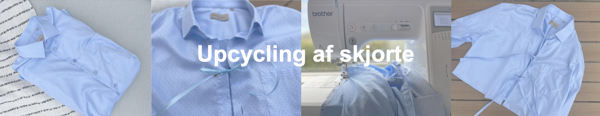
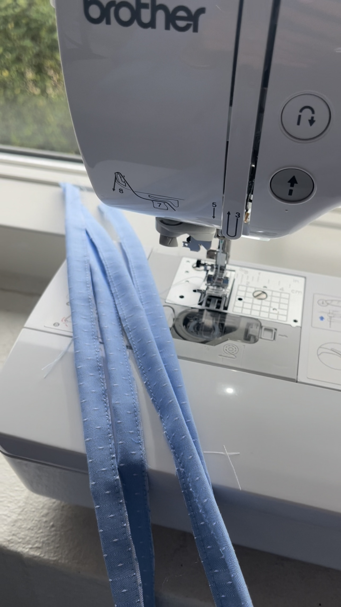
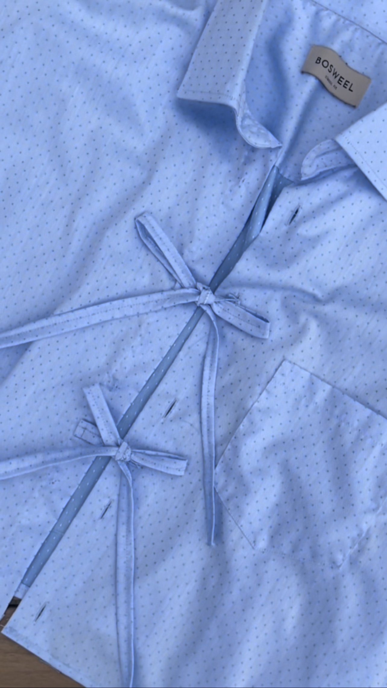
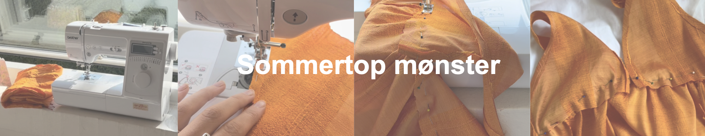
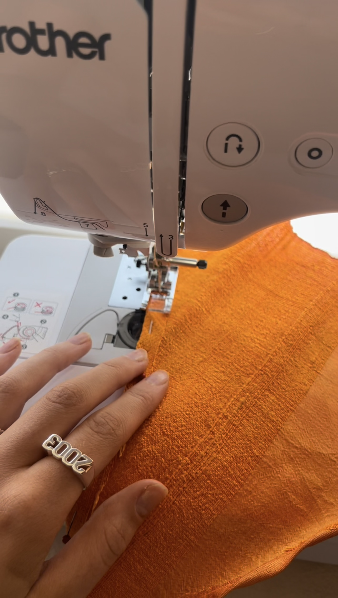
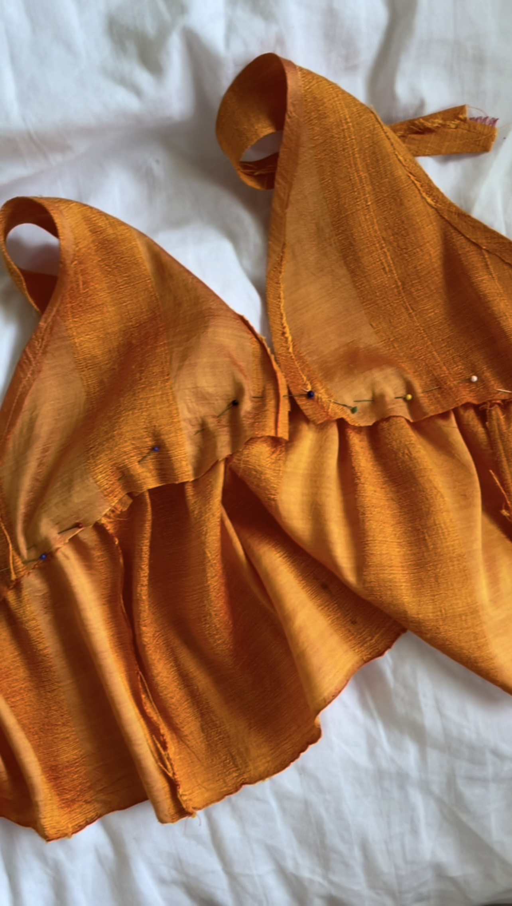

Inspiration
Galleri
TikTok
Stof
Stof guide
Hvor meget stof skal du bruge
Obevaring af stof
Mønster
Sådan laver du dit eget mønster
Mønster ud fra tøj
Sådan syer du med mønster
Upcycling
Oversized skjorte
Jeans til nederdel
Kom igang med at sy
Mustaves materialer
Lær at bruge din symaskine

Inspiration
Se skjorten blive upcyclet i en TikTok


Vis på TikTok

Inspiration
Se sommertoppen blive syet i en TikTok


Vis på TikTok